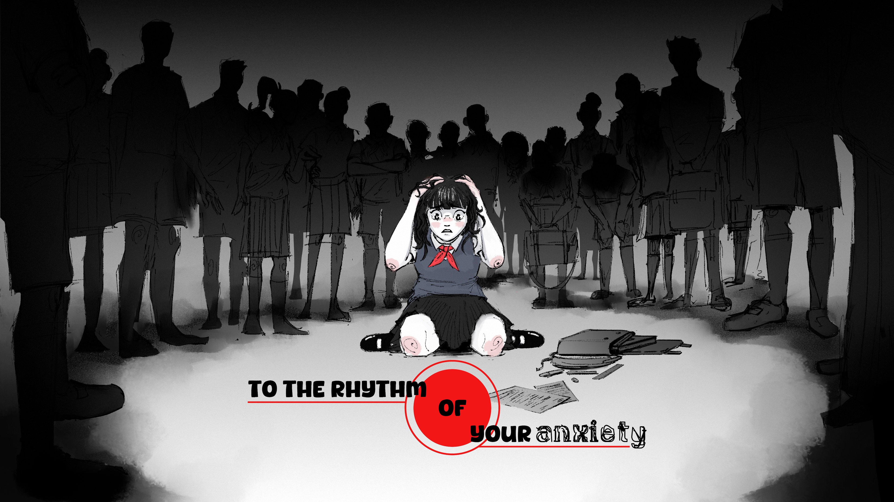

RÔLE — Narrative/Game & Level Design / Programming / Project Manager / Director

To the rhythm of your anxiety a été créé lors d'un projet de première année de Game Design à Isart Digital. La contrainte de ce projet était qu'il soit entièrement jouable avec une seule touche, en plus de le contrainte de temps.
C'est un jeu de rythme narratif dans lequel vous vivez la crise d'anxiété d'une lycéenne. Votre but, réussir à la calmer, chaque erreur vous éloignant un peu plus de votre objectif.
Mes intentions derrière ce projet était d’amener un enjeux narratif dans un jeu de rythme, et toujours dans mon envie de faire ressentir aux joueurs, j’ai trouvé la crise d’anxiété étant un bon thème à aborder ici. Le stresse et la pression dû à l’exigence de l'exécution d’un jeu de rythme, renvoie à ce que tu pourrais ressentir pendant une crise d’anxiété, donnant un narrative design cohérent. Le sujet n’est pas profondément traité, mais ce n’était pas le but ici.
Merci à Yoann Robic pour les assets 2D et Paul Drappier pour les musique.
Années de création : 2024/2025
Le jeu se compose de trois phases de gameplay qui se répètent, en augmentant la difficulté.